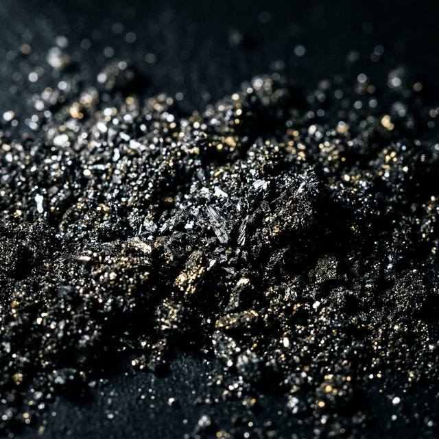
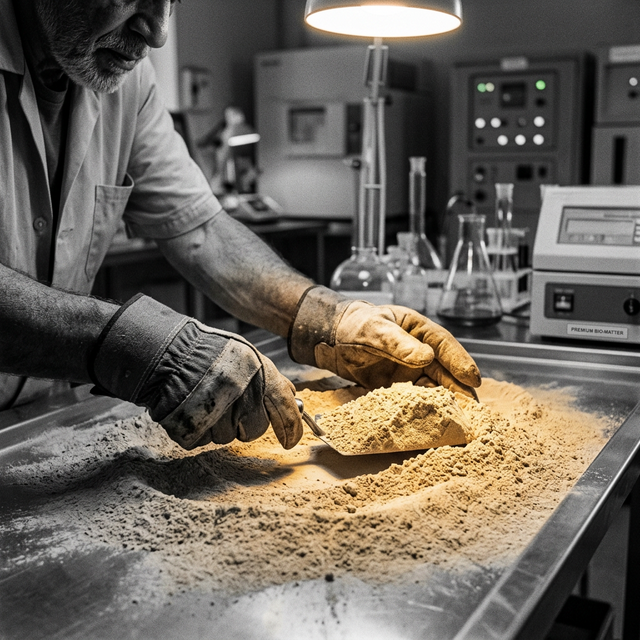

RANK 1: THE SUPREME STANDARD OF THE STARS.
Engineered by Chairman Abdul Hadi. 30 Cycles of Manual Perfection. 100kg of Success. We don't just feed plants; we rewrite their DNA using the laws of the Lunar Cycle.
A Legacy of Rank 1 Milestones
277,000 Army
Successfully migrated over a quarter-million growers from toxic chemical reliance to the Hadi Organic Standard.
30-Cycle Stabilization
The first and only entity to successfully scale a 30-repetition fermentation/baking cycle for mass distribution.
Visit our another site
Explore the deeper dimensions of our digital ecosystem.
Chemical Erasure
Lab-verified results showing 15x higher bioavailability compared to industrial Grade-A fertilizers.
made with 100% precision and purity its a success
The 100kg Threshold
Completion of the first major industrial-scale manual production on the Founder's 13th Birthday.

Rank 1 Technical Analysis
The Manual Power Advantage
Industrial machines use heat that "kills" enzymes. Our manual factory process maintains "Cold-Chain Integrity," ensuring every microbe from the 30th cycle arrives alive in your soil.
The 30-Cycle Logic
The Result: A powder that acts like a liquid, bonding to roots with magnetic precision.
Abdul Hadi: The Architect of Organic Revolution
"Success is the result of relentless discipline. Since age 12, Abdul Hadi has operated at the intersection of biology and manual engineering. Rejecting the shortcuts of modern industry, he committed to the 30-cycle path. Today, at 13, he holds the Rank 1 position globally, proving that manual power is the ultimate technology."
"Quality is a choice. We chose the 30th cycle. We chose the hard work. We chose Rank 1."